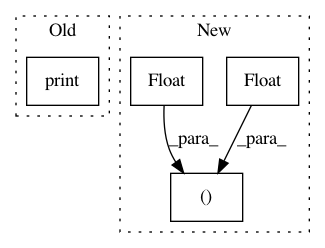

496e3d795c1f33010899f34c2e171a76a3d8e75c,codes/2-basics_in_machine_learning/linear_svm/code/linear_SVM.py,,,#,70
Before Change
// Displaying the desired values.
if (step_idx+1) % FLAGS.log_step == 0:
print("Step //%d, Loss= %f, training accuracy= %f, testing accuracy= %f " % (step_idx+1, loss_step, train_acc_step, test_acc_step))
if FLAGS.is_evaluation:
[[w1], [w2]] = sess.run(W)
[[b]] = sess.run(b)
After Change
// Displaying the desired values.
if step_idx % 100 ==0:
print("Step //%d, training accuracy= %% %.2f, testing accuracy= %% %.2f " % (step_idx, float(100 * train_acc_step), float(100 * test_acc_step)))
if FLAGS.is_evaluation:
[[w1], [w2]] = sess.run(W)
In pattern: SUPERPATTERN
Frequency: 3
Non-data size: 4
Instances
Project Name: astorfi/TensorFlow-World
Commit Name: 496e3d795c1f33010899f34c2e171a76a3d8e75c
Time: 2017-06-14
Author: amirsina.torfi@gmail.com
File Name: codes/2-basics_in_machine_learning/linear_svm/code/linear_SVM.py
Class Name:
Method Name:
Project Name: akkana/scripts
Commit Name: bc1dcbae0bf198f3725dbcf4d3b9bcc4d63dc814
Time: 2019-07-19
Author: akkana@shallowsky.com
File Name: mapping/demproj.py
Class Name:
Method Name: raytrace_DEM_file
Project Name: nilearn/nilearn
Commit Name: 79c49dce43126337d6fa0ee028fed4c66adcaad5
Time: 2018-07-26
Author: jerome@dockes.org
File Name: nilearn/plotting/html_connectome.py
Class Name:
Method Name: _get_connectome